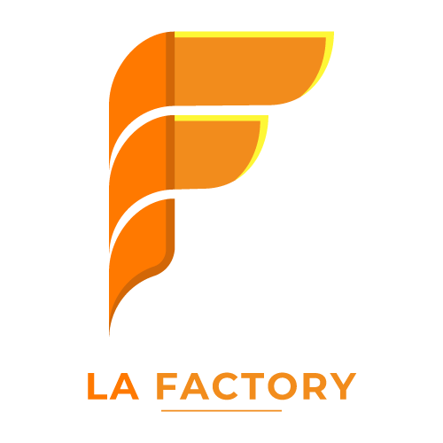

<div class="accueil container-fluid">
  <div class="accueil-contenu">
    
    <h1>Bienvenue !</h1>
    <p class="container">
      La Factory, créée par Jean-Michel Bruitage, est une plateforme de gestion
      de formation innovante, dédiée à l'optimisation des processus
      d'apprentissage et de développement professionnel. Ce site propose des
      outils avancés pour la création, la gestion et le suivi des programmes de
      formation, facilitant ainsi l'acquisition de nouvelles compétences pour
      les entreprises et les particuliers. Grâce à une interface intuitive et
      des fonctionnalités personnalisables, La Factory permet aux formateurs de
      concevoir des parcours pédagogiques adaptés aux besoins spécifiques des
      apprenants, tout en assurant un suivi efficace des progrès et des
      performances.
    </p>
  </div>
</div>
